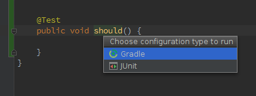

Junit Test에서 Gradle/Junit 선택에서 Junit을 기본으로 설정하는 방법
IntelliJ 14 부터는 Gradle plugin 적용시 Test Case에서 Run 선택시 Gradle과 JUnit 중 하나를 선택하도록 표시된다.

이렇게 표시되지 않고, 바로 JUnit이 실행되게 하려면.. idea.properties 파일에 다음 라인 추가 후 IntelliJ를 재시작한다. ``` idea.gradle.prefer.idea_test_runner=true ```
- IntelliJ 14.1 부터 사용 가능 (14.0.x 는 upgrade 필요)
- idea.properties 파일 위치
- OSX : /Applications/IntelliJ IDEA 14.app/Contents/bin/idea.properties
- Windows : INSTALL_DIR/bin/idea.properties